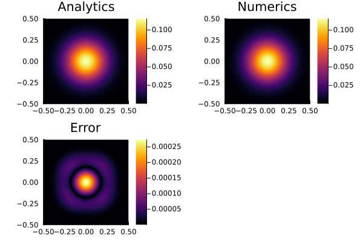

Diffusion Equation (Backward Euler)
This is a straight forward example to solve the conductive part of the 2-D temperature conservation equation using the defect correction method. The focus lies on the
- application of the expanded temperature field and boundary conditions,
- set up of the coefficient matrix and residual vector,
- implementation of the analytical solution (
ExactFieldSolution.jl), and - application of the defect correction method.
The example calculates the numerical solution of a transient diffusion of an initial, Gaussian 2-D temperature distribution. The peak $T0$ of the Gaussian anomaly is located in the center of the model domain with a certain width $\sigma$. The diffusion is controlled by the diffusion coefficient (thermal conductivity) $K$.
The accuracy of the numerical solution is checked with its analytical solution. The results are plotet for ever nout time step in a single figure.
First one needs to load the required packages:
using GeoModBox.HeatEquation.TwoD
using ExactFieldSolutions, LinearAlgebra, Plots, PrintfNow, one needs to define the geometry and the numerical parameters.
# Spatial domain
xlim = (min=-1/2, max=1/2)
ylim = (min=-1/2, max=1/2)
nc = (x=100, y=100)
nv = (x=nc.x+1, y=nc.y+1)
nc = (x=nc.x+0, y=nc.y+0)
nv = (x=nv.x+0, y=nv.y+0)
Δ = (x=(xlim.max-xlim.min)/nc.x, y=(ylim.max-ylim.min)/nc.y)
x = (c=LinRange(xlim.min+Δ.x/2, xlim.max-Δ.x/2, nc.x), v=LinRange(xlim.min, xlim.max, nv.x))
y = (c=LinRange(ylim.min+Δ.y/2, ylim.max-Δ.y/2, nc.y), v=LinRange(ylim.min, ylim.max, nv.y))Now, one needs to define the time parameters and parameters for the solution iteration.
# Time domain
nt = 500
t = 0.
nout = 10
# Iterations
niter = 10
ϵ = 1e-10In the following, all fields and parameter arrays are initialized.
# Primitive variables
T_ex = zeros(nc.x+2, nc.y+2)
T = zeros(nc...)
T0 = zeros(nc...)
Te = zeros(nc...)
# Derived fields
∂T = (∂x=zeros(nv.x, nc.x), ∂y=zeros(nc.x, nv.x))
q = (x=zeros(nv.x, nc.x), y=zeros(nc.x, nv.x))
# Material parameters
ρ = zeros(nc...)
Cp = zeros(nc...)
k = (x=zeros(nv.x, nc.x), y=zeros(nc.x, nv.x))
# Residuals
R = zeros(nc...)Here, the boundary conditions are defined, using a named tuple BC. The tuple contains the type (Dirichlet or Neumann) and the value of each boundary (North, East, South, West). Additionally, the array for the numbering of the equation is initialized.
# Boundary conditions
BC = (
type = (W=:Dirichlet, E=:Dirichlet, S=:Dirichlet, N=:Dirichlet),
# type = (W=:Neumann, E=:Neumann, S=:Neumann, N=:Neumann),
val = (W=zeros(nc.y), E=zeros(nc.y), S=zeros(nc.x), N=zeros(nc.x)))
# Numbering
Num = (T=reshape(1:nc.x*nc.y, nc.x, nc.y),)As initial condition, the analytical solution for the time $t=0$ is choosen. Also, the values for the physical parameter are assigned. Here, all parameters are non-dimensional.
# Initial conditions
AnalyticalSolution2D!(T, x.c, y.c, t,(T0=1.0,K=1e-6,σ=0.1))
@. k.x = 1e-6
@. k.y = 1e-6
@. ρ = 1.0
@. Cp = 1.0
Δt = max(Δ...)^2/(maximum(k.x)/minimum(ρ)/minimum(Cp))/4.1Now, the time loop can start. Within the time loop, the time, the analytical solution and the value for the boundaries is calculated within the following.
# Time integration Loop
for it=1:nt
@printf("Time step = %05d\n", it)
t += Δt
@. T0 = T
# Exact solution on cell centroids
AnalyticalSolution2D!(Te, x.c, y.c, t,(T0=1.0,K=1e-6,σ=0.1))
# Exact solution on cell boundaries
BoundaryConditions2D!(BC, x.c, y.c, t,(T0=1.0,K=1e-6,σ=0.1))The temperature conservation equation is solved in the following using the defect correction method. Therefore, one first needs to determine the residual (ComputeResiduals2D!()) of the system of equations, assuming an initial guess. If the residual is small enough (ϵ), the solution iteration is stopped.
Note: The iteration is only necessary, if the system is non-linear. Here, the final solution is found after one iteration.
For more details on the defect correction method, please refer to the documentation.
# Iteration loop
for iter=1:niter
# Evaluate residual
ComputeResiduals2D!(R, T, T_ex, T0, ∂T, q, ρ, Cp, k, BC, Δ, Δt)
@printf("||R|| = %1.4e\n", norm(R)/length(R))
norm(R)/length(R) < ϵ ? break : nothing
# Assemble linear system
K = AssembleMatrix2D(ρ, Cp, k, BC, Num, nc, Δ, Δt)
# Solve for temperature correction: Cholesky factorisation
Kc = cholesky(K.cscmatrix)
# Solve for temperature correction: Back substitutions
δT = -(Kc\R[:])
# Update temperature
@. T += δT[Num.T]
endFinally, the analytical and numerical solution and its error are plotted for each nout time step.
# Visualisation
if mod(it, nout)==0
p1 = plot(aspect_ratio=1, xlims=(xlim...,), ylims=(ylim...,))
p1 = heatmap!(x.c, y.c, Te', title="Analytics")
p2 = plot(aspect_ratio=1, xlims=(xlim...,), ylims=(ylim...,))
p2 = heatmap!(x.c, y.c, T', title="Numerics")
p3 = plot(aspect_ratio=1, xlims=(xlim...,), ylims=(ylim...,))
p3 = heatmap!(x.c, y.c, (abs.(T-Te))', title="Error")
display(plot(p1, p2, p3, layout=(2,2)))
end
end
Figure 1. Final plot for the backward Euler solution using the defect correction method.